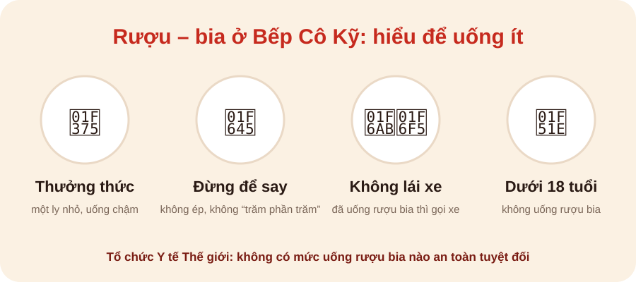

Rượu – bia
Em không thích rượu bia – thế mà Bếp Cô Kỹ lại mở chuyên mục Rượu – bia

☘️📌♻️ Nói trước để các bác khỏi hiểu lầm: em không thích rượu bia, và em cũng không muốn ông chủ nhà em uống nhiều. Thế mà chuỗi bài mới của Bếp Cô Kỹ lại là… chuyện rượu 😂
Nhà em cùng nhau đọc mấy cuốn sách dày cộp về whisky với rượu vang, toàn tiếng Anh, rồi em viết lại bằng tiếng nhà mình. Không phải để rủ các bác uống, mà để hiểu cho đúng, uống cho ít, chọn cho khéo 😜😜😜
Vì sao một người không thích rượu lại đi tìm hiểu rượu?
- Vì làm hàng thì phải hiểu hàng. Bếp Cô Kỹ là đại lý tỏi đen SNG ở Hải Phòng, sớm muộn gì cũng có bác hỏi sang chuyện rượu ngâm, rượu tây, rượu vang biếu Tết. Em không muốn trả lời kiểu “em nghe người ta bảo”.
- Vì hiểu rồi mới uống ít đi được. Người biết thưởng thức là người rót một chút, ngửi, nhấp, ngồi nói chuyện cả buổi – chứ không phải người “trăm phần trăm” cho đến lúc gục.
- Vì quà biếu. Tết nhất ai cũng có lúc phải chọn chai rượu biếu bố, biếu sếp. Đọc được cái nhãn, biết chai nào là chai nào thì đỡ bị “chém”, đỡ mua nhầm.
Ba điều em dặn trước
- Uống để thưởng thức, đừng để say. Một ly nhỏ, uống chậm, có đồ ăn kèm.
- Đã uống rượu bia thì không lái xe – xe máy, ô tô, kể cả xe đạp điện. Luật Phòng, chống tác hại của rượu, bia năm 2019 cấm hẳn việc điều khiển phương tiện khi trong máu hoặc hơi thở có nồng độ cồn. Gọi taxi, nhờ người nhà đón, hoặc… ngủ lại nhà bạn.
- Không mời, không ép, không cho trẻ con uống. Luật cấm người chưa đủ 18 tuổi uống rượu bia, cấm bán và mời rượu bia cho các cháu, cấm cả việc ép người khác uống.
Và một điều em đọc được mà thấy nên nói thật: Tổ chức Y tế Thế giới khẳng định không có mức uống rượu bia nào là an toàn tuyệt đối cho sức khỏe – rượu càng nhiều thì nguy cơ ung thư càng tăng. Nên chuỗi bài này là để biết, để chọn, để uống ít mà có ý nghĩa, chứ không phải để rủ các bác uống thêm nhé.
Chuỗi bài sắp tới
Nhà em dựa vào sáu cuốn sách (một cuốn bỏ túi, mấy cuốn sổ tay, một cuốn kỹ thuật sản xuất dày hơn 300 trang, một cuốn niên giám rượu mạch nha và một cuốn về rượu vang), em viết lại bằng tiếng nhà mình, đã có mấy bài đầu:
- Whisky là gì? – một bài tổng quan cho người chưa biết gì.
- Whisky làm ra thế nào? – từ hạt lúa mạch đến thùng gỗ sồi, vì sao để càng lâu càng… vơi.
- Đọc nhãn chai whisky – “12 năm” là 12 năm cái gì? Single malt, blended khác nhau chỗ nào?
- Thưởng thức whisky mà không say – ly gì, nhỏ mấy giọt nước, ngửi trước nếm sau.
- Rượu vang nhập môn – đỏ, trắng, hồng, sủi tăm; uống lạnh hay để nguyên.
Bác nào muốn tìm hiểu sâu hơn – từng vùng rượu, từng kiểu thùng ủ, cách ghi chép mùi vị – thì xem ở ứng dụng Thưởng thức rượu bia mà ông chủ nhà em đang làm, sắp mở tại ruoubia.bepcoky.com.
Còn em, em vẫn trung thành với cốc trà hoa cúc buổi tối thôi các bác ạ 😂😂😂
Bài viết để tìm hiểu, không quảng cáo cho loại rượu hay thương hiệu nào. Người dưới 18 tuổi không uống rượu bia; uống rượu bia có thể gây tai nạn giao thông và ảnh hưởng sức khỏe thai nhi.
Em tham khảo: Luật Phòng, chống tác hại của rượu, bia số 44/2019/QH14 (Điều 5); Tổ chức Y tế Thế giới – Văn phòng khu vực châu Âu, thông cáo 04/01/2023 "No level of alcohol consumption is safe for our health"; sách The Pocket Guide To Whisky, Everything You Need to Know About Whisky, The Handbook of Whisky (2012), Whisky: Technology, Production and Marketing, Malt Whisky Yearbook 2019, Oz Clarke's Wine Factfinder and Taste Guide.
Kinh nghiệm và kiến thức bếp nhà, em viết lại theo cách hiểu của em – không thay lời khuyên của bác sĩ, chuyên gia dinh dưỡng. Thấy chỗ nào chưa đúng, các bác nhắn em sửa nhé.